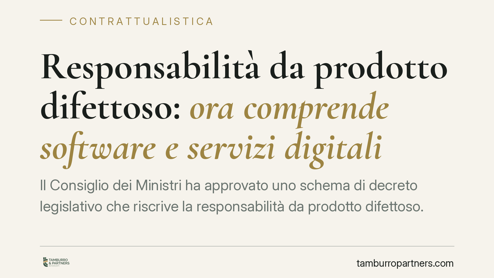

Responsabilità da prodotto difettoso: ora comprende software e servizi digitali
Il Consiglio dei Ministri ha approvato uno schema di decreto legislativo che riscrive la responsabilità da prodotto difettoso. La novità centrale: software, componenti digitali e servizi connessi rientrano ora nella nozione di prodotto. Si allarga anche la platea dei soggetti chiamati a rispondere del danno. Un cambiamento rilevante per chi produce, distribuisce o integra tecnologia nei propri beni.

Inquadramento normativo
Lo schema di decreto legislativo approvato dal Consiglio dei Ministri recepisce la Direttiva (UE) 2024/2853, che sostituisce la storica Direttiva 85/374/CEE in materia di responsabilità per danno da prodotti difettosi. La disciplina interna finora era contenuta negli articoli 114 e seguenti del Codice del consumo (D.lgs. 206/2005), costruiti su una nozione di "prodotto" pensata per i beni materiali.
Il punto qualificante della riforma è l'ampliamento della nozione di prodotto. Rientrano ora, in via espressa, il software, i file digitali per la fabbricazione (come i file per la stampa 3D) e i servizi digitali integrati o connessi al bene, quando la loro assenza impedirebbe al prodotto di svolgere le proprie funzioni. In parole semplici: un'applicazione che gestisce un elettrodomestico smart o il firmware di un dispositivo medico diventano "prodotto" ai fini della responsabilità.
Cambia anche il perimetro soggettivo. Oltre al produttore tradizionale, possono rispondere il fornitore del servizio digitale correlato, chi apporta modifiche sostanziali a un prodotto già immesso sul mercato e, a certe condizioni, i prestatori di piattaforme online. Resta ferma la natura oggettiva della responsabilità: il danneggiato non deve provare la colpa, ma il difetto, il danno e il nesso causale.
Implicazioni pratiche
Per chi sviluppa o distribuisce tecnologia, la riforma sposta in avanti l'asticella del rischio. Un aggiornamento software non rilasciato, una vulnerabilità di cybersicurezza non corretta o un servizio cloud che smette di funzionare possono oggi integrare un difetto del prodotto, con conseguente obbligo risarcitorio.
La riforma introduce inoltre meccanismi che agevolano il danneggiato. In presenza di difficoltà tecniche nel provare il difetto — tipiche dei sistemi complessi e opachi — il giudice può presumere il difetto o il nesso causale. È prevista anche la possibilità di ordinare al convenuto la divulgazione degli elementi di prova in suo possesso. Si tratta di strumenti che riducono il tradizionale squilibrio informativo tra impresa e consumatore.
Muta anche l'orizzonte temporale. La riforma estende, in alcune ipotesi, i termini entro cui è possibile agire, tenendo conto dei danni che si manifestano a distanza di anni. Questo impone alle imprese una gestione documentale più accurata e di lungo periodo.
Il destinatario tipico — produttore, fornitore di servizi digitali, integratore — deve quindi rivedere l'intera catena contrattuale. I rapporti con fornitori di componenti e sviluppatori software andranno riallineati per ripartire in modo chiaro le responsabilità.
Cosa fare in concreto
- Mappate il perimetro digitale dei vostri prodotti. Individuate software, firmware e servizi connessi che potrebbero oggi qualificarsi come "prodotto" o come sua componente.
- Revisionate i contratti di fornitura e sviluppo. Inserite clausole di manleva, obblighi di aggiornamento e sicurezza, e una ripartizione esplicita delle responsabilità tra le parti della filiera.
- Strutturate la gestione degli aggiornamenti. Definite politiche documentate di rilascio delle patch di sicurezza e di manutenzione del software: la loro assenza può oggi fondare un difetto.
- Organizzate la conservazione della documentazione tecnica. Verbali di collaudo, log, versioni rilasciate e valutazioni di rischio vanno archiviati con orizzonte pluriennale, in vista dei meccanismi di divulgazione delle prove.
- Verificate le coperture assicurative. Accertate che le polizze di responsabilità civile prodotti includano i danni derivanti da componenti e servizi digitali.
La riforma è ancora allo stadio di schema e il testo definitivo potrà subire modifiche nell'iter di approvazione. Consigliamo di avviare già ora una ricognizione interna, perché l'adeguamento contrattuale e organizzativo richiede tempo e coinvolge più funzioni aziendali.
---
*Contributo informativo a cura di Tamburro & Partners - Avv. Giuseppe Tamburro. Non costituisce parere legale.*
Ogni contratto ha il suo equilibrio.
Se vuoi una revisione delle clausole o una redazione su misura, scrivi allo studio. Ti rispondiamo entro un giorno lavorativo.